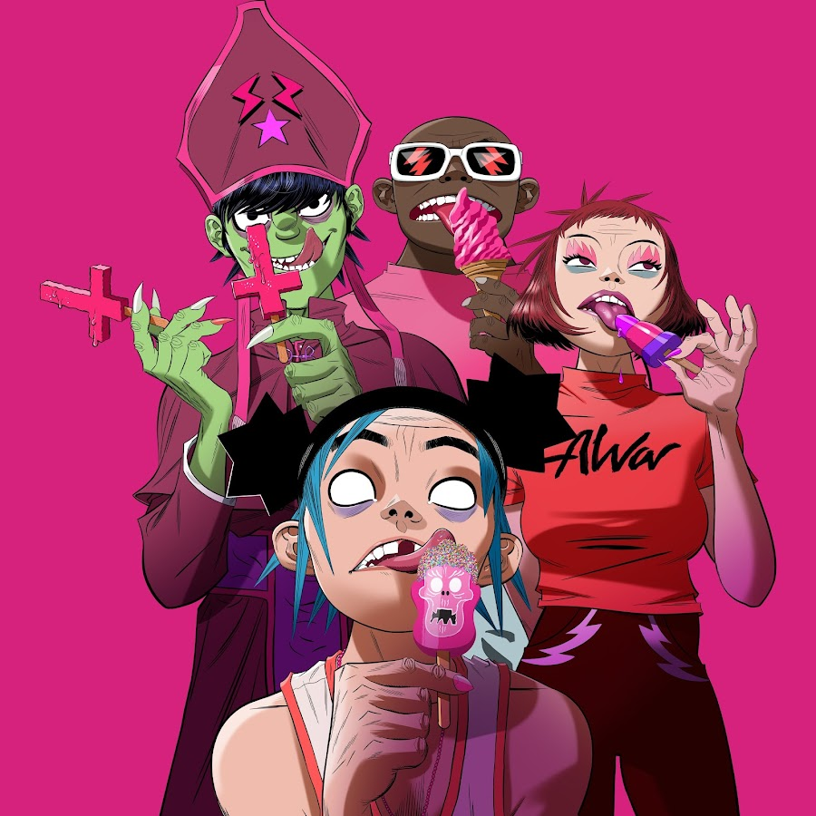

GORILLAZ
Historia da banda
Gorillaz é uma banda virtual de trip rock britânica criada no ano de 1998 pelo vocalista e líder do Blur, Damon Albarn, e pelo cartunista Jamie Hewlett, cocriador da história em quadrinhos Tank Girl. A banda é composta por quatro membros animados: 2-D, Murdoc, Noodle e Russel. A música do grupo é resultado da colaboração entre vários outros músicos, sendo Damon Albarn o único membro permanente. Seu estilo musical normalmente é classificado como rock alternativo, embora haja muita influência do britpop, dub e da eletrônica.
O primeiro álbum da banda, Gorillaz, vendeu mais de 7 milhões de cópias e a banda entrou para o Guinness World Records como a Banda Virtual de Mais Sucesso. O segundo álbum da banda, Demon Days, foi certificado com seis discos de platina no Reino Unido e dupla platina nos Estados Unidos. A banda recebeu 5 indicações para o Grammy Award em 2006, e venceu uma delas na categoria "Melhor Colaboração Pop". No mesmo ano, a banda fez um parceria com a cantora Madonna na festa do Grammy Awards. As músicas escolhidas para a parceria foram "Hung Up", um sucesso do álbum Confessions on a Dance Floor, da própria Madonna e "Feel Good Inc.", sucesso do segundo disco do Gorillaz, Demon Days. Atualmente a banda possui aproximadamente 15 milhões de discos vendidos em todo o mundo.
Integrantes
Damon Albarn
Jamie Hewlett
Discografia
Álbuns de estúdio
Gorillaz (2001)
Demon Days (2005)
Plastic Beach (2010)
The Fall (2011)
Humanz (2017)
The Now Now (2018)
Song Machine, Season One: Strange Timez (2020)